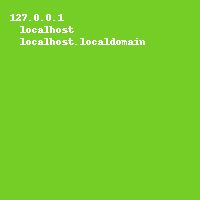

Napix allows to write quickly managers that can do CRUD operations with JSON objects. This page deals with extensions to thoses CRUD operations: the actions that allow arbitrary operation with arbitrary parameters and the views that let the the resource to be presented as arbitrary file types.
This page assumes that a Napix server runs on localhost:8002 with this simple manager: /samples/extensions.py
This very simple manager show the content of the /etc/hosts file. The resource are identified by the first hostname and contains the ip and an array of hostnames.
Actions operate on a resource and are instance methods of a manager. They can take parameters, mandatory or optional.
They are declared by the decorator actions.action().
We will use the following code to scan the port.
import socket
def scan_port( host, port, timeout ):
sock = socket.socket( socket.AF_INET)
sock.settimeout( timeout )
try:
sock.connect( (host, port))
except (socket.timeout, socket.error) :
return False
sock.close()
return True
The actions of the managers are in the actions key of the metadatas of the managers. Now, this array is empty because there isn’t any action declared:
curl -s -X GET "localhost:8002/hosts/_napix_help?authok" | python -m json.tool
{
"absolute_url": "/hosts/*",
"actions": [],
"collection_methods": [
"POST",
"HEAD",
"GET"
],
...
Now we add the action in the manager. The action, take the target resource as its first argument. The following arguments are mandatory if they have not a default value, else they are optional.
from napixd.managers.actions import action
class HostManager(DictManager):
#...
@action
def scan( self, resource, port, timeout=1):
"""Scan the port and return OPEN or CLOSED."""
if scan_port( resource['ip'], port):
return 'OPEN'
else:
return 'CLOSED'
Now the action appears in the metadatas of the manager and in the _napix_all_actions child of each of HostManager resources:
$ curl -s -X GET "localhost:8002/hosts/_napix_help?authok" | python -m json.tool
{
"absolute_url": "/hosts/*",
"actions": {
"scan" : "Scan the port and return OPEN or CLOSED."
},
...
$ curl -s -X GET "localhost:8002/hosts/sony_rssi/_napix_all_actions?authok"
["scan"]
Actions have their own metadatas available at _napix_action/NAME/_napix_help. The doc key gives the docstring of the method, mandatory lists the mandatory parameters, optional is a dict of the parameters of the function that have a default value. resource_fields takes the mandatory and optional parameters and their documentation (cf later):
$ curl -s -X GET "localhost:8002/hosts/sony_rssi/_napix_action/scan/_napix_help?authok" | python -m json.tool
{
"doc": "Scan the port and return OPEN or CLOSED.",
"mandatory": [
"port"
],
"optional": {
"timeout" : 1
},
"resource_fields": {
"port": {
"description": "",
"example": ""
},
"timeout": {
"description": "",
"example": "",
"optional": True
}
}
The data returned by the action are encoded in JSON.
The additional documentation on the parameters of the action can be set with parameter()
class HostManager(DictManager):
#...
@parameter( 'port', description='The port to scan', example=22)
@parameter( 'timeout', description='The time to wait in seconds', example=1 )
@action
def scan( self, resource, port, timeout=1):
#...
Now, the resource_fields dict of the help is populated.:
$ curl -s -X GET "localhost:8002/hosts/localhost/_napix_action/scan/_napix_help?authok" | python -m json.tools
{
"doc": "Scan the port and return OPEN or CLOSED.",
"mandatory": [
"port"
],
"optional": {
"timeout": 1
},
"resource_fields": {
"port": {
"description": "The port to scan",
"example": 22
},
"timeout": {
"description": "The time to wait in seconds",
"example": 1,
"optional": true
}
}
}
Views operate on a resource and are instance methods of a manager.
They are declared by the decorator views.view().
For this example, we will use the HostManager written in the high-level how-to and represent the host as picture.
If the manager implements a view, this view is requested with the format GET parameter:
$ curl -X GET 'localhost:8002/hosts/localhost?authok&format=png' -D /dev/stderr
HTTP/1.1 406 Not Acceptable
Content-Length: 18
Content-Type: text/plain
Date: Wed, 27 Jun 2012 14:28:06 GMT
Server: Rocket 1.2.4 Python/2.6.6
Connection: keep-alive
Cannot render png.
There is not yet a png format. Only the default JSON format is available now.
To implement a view, one need to implement a method and decorated it with views.view()
from napixd.managers.views import view
class HostManager(DictManager):
#...
@view('png')
def show_as_view( self, resource_id, resource, response):
pass
Now the server has a format, it does not return anything yet:
$ curl -X GET 'localhost:8002/hosts/localhost?authok&format=png' -D /dev/stderr -s
HTTP/1.1 200 OK
Content-Length: 0
Content-Type:
Date: Wed, 27 Jun 2012 15:48:26 GMT
Server: Rocket 1.2.4 Python/2.6.6
Connection: keep-alive
$ curl -X GET 'localhost:8002/hosts/localhost?authok&format=jpg' -D /dev/stderr -s
HTTP/1.1 406 Not Acceptable
Content-Length: 45
Content-Type: text/plain
Date: Wed, 27 Jun 2012 15:49:08 GMT
Server: Rocket 1.2.4 Python/2.6.6
Connection: keep-alive
Cannot render jpg. Available formats is: png
import PIL
@view('png')
def as_picture(self, id_, resource, response):
"""Show a picture.
The background color depends on the IP """
#Set the header, else it will be interpreted as HTML
#set the file name
response.set_header('Content-type', 'image/png')
response.set_header('Content-Disposition', 'filename=%s.png'%id_)
#compute a color from the resource
color = PIL.ImageColor.getrgb( '#%06x' % (hash(id_) % 0xffffff))
#make the image and the drawing tool
image = PIL.Image.new( 'RGB', (300, 50), color)
draw = PIL.ImageDraw.Draw( image)
#Draw the text on the image
draw.text( (10, 12), resource['ip'])
for idx,hostname in enumerate(resource['hostnames']):
draw.text( (20, 24 + idx*12), hostname)
#Save the image directly to the response object.
#It has got a write method which is used by PIL
image.save( response, 'png')
#does not return anything, the response object will be sent.
The url localhost:8002/hosts/localhost?authok&format=png produces the following picture:
